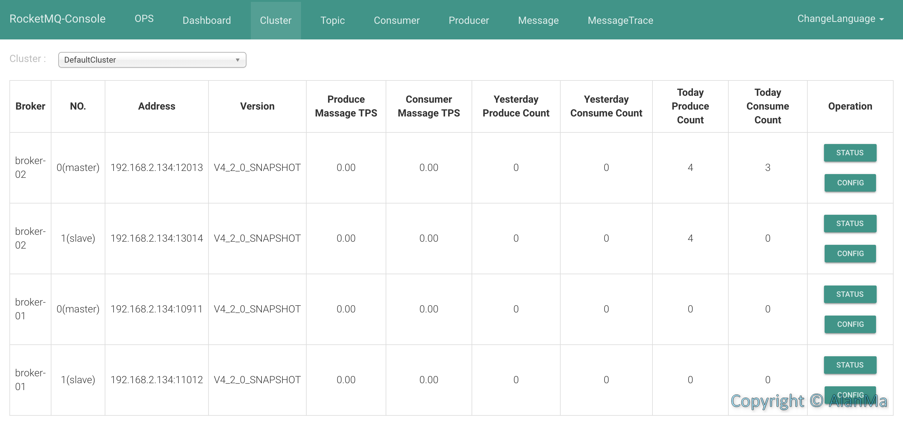

概述 RocketMQ早期为阿里巴巴消息队列开源项目，后被捐赠给apache并成为其顶级开源项目被应用到很多互联网公司系统中。消息队列本质上是一种”先进先出”的数据结构，RocketMQ具有应用解耦、流量消峰、消息分发、保证最终一致性，方便动态扩容等特性。另外RocketMQ使用Java语言开发，这也降低了分析源码的门槛，方便大家更深入的排查定位问题和二次定制开发。
架构图
RocketMQ基于长轮序的拉取方式，这样便解决了事物消息、顺序消息和海量堆积等问题，消息队列的push和pull机制会在后续原理篇中详细说明。长连接每隔30s发送一次心跳包，如果长时间未收到心跳包Nameserver会踢掉Broker，即关闭与Broker的连接。
基本概念
Nameserver——Nameserver是整个消息队列中的状态服务器，集群的各个组件通过其了解彼此信息。
Broker——消息中转角色，负责存储消息，转发消息。
Topic——消息队列分类，用来区分不同类型的消息。
Tag——消息队列子分类，用来区分相同Topic下的不同信息。
Queue——Topic对应的消息队列数，如消息需要全局顺序，则topic的queue必须设置为1。
集群模式 1M1S 优点: Broker-Master宕机，Broker-Slave可以同步Broker-Master未被消费的消息，供消费者消费，不中断后续业务流程。
缺点:Broker- Master宕机后，生产者无法在Broker-Slave生产消息，即”只能读消息，不能写消息”。
2M 优点: 一台Broker-Master-01宕机，不影响另一台，Nameserver会在30秒内，踢掉宕机Broker-Master-01，从而保证新连接的client都访问到正常Broker-Master-02。
缺点: 宕机Broker-Master-01中未被消费的消息无法同步。
2M2S 可以兼顾”1M1S”和”2M”模式的优点，宕机Broker-Master-01的消息同步后继续被消费，又可以向另一个存活的Broker-Master-02中生产新的消息。
配置安装 设备信息 可以使用4台机器分别启动Namserver01和Broker-Master-01、Namserver02和Broker-Master-02、Broker-Slave-01、Broker-Slave-02，因为Nameserver压力比较小，测试只需两台构成最小集群即可。
笔者在个人mac上编写此篇博文，为了简单表明原理，通过不同端口来代表不同虚机，由于需要测试不同IP的Nameserver集群，故使用一台虚机。
名称
IP:Port
Namserver01
192.168.2.134:9876
Broker-Master-01
192.168.2.134:10911
Broker-Slave-01
192.168.2.134:11012
Namserver02
192.168.2.183:9876
Broker-Master-02
192.168.2.134:12013
Broker-Slave-02
192.168.2.134:13014
下载MQ http://rocketmq.apache.org/dowloading/releases/
本文选择目前公司生产版本4.2.0 release
1 2 unzip rocketmq-all-4.2.0-bin-release.zip -d ./rocketmq-all-4.2.0-bin-release cd rocketmq-all-4.2.0-bin-release/
修改内存 RocketMQ默认运行需要占用4G内存，在测试环境可以根据实际需要修改内存大小，否则会出现内存不足无法启动Broker的问题。
bin/runserver.sh
修改前
1 JAVA_OPT="${JAVA_OPT} -server -Xms4g -Xmx4g -Xmn2g -XX:MetaspaceSize=128m -XX:MaxMetaspaceSize=320m"
修改后
1 JAVA_OPT="${JAVA_OPT} -server -Xms256m -Xmx256m -Xmn128m -XX:MetaspaceSize=128m -XX:MaxMetaspaceSize=320m"
bin/runbroker.sh
修改前
1 JAVA_OPT="${JAVA_OPT} -server -Xms8g -Xmx8g -Xmn4g"
修改后
1 JAVA_OPT="${JAVA_OPT} -server -Xms256m -Xmx256m -Xmn128m"
bin/mqnamesrv.xml、bin/mqbroker.xml
修改前
1 2 3 4 5 6 7 8 <options > <-Xms512m > </-Xms512m > <-Xmx1g > </-Xmx1g > <-XX:NewSize > 256M</-XX:NewSize > <-XX:MaxNewSize > 512M</-XX:MaxNewSize > <-XX:PermSize > 128M</-XX:PermSize > <-XX:MaxPermSize > 128M</-XX:MaxPermSize > </options >
修改后
1 2 3 4 5 6 7 8 <options > <-Xms256m > </-Xms256m > <-Xmx512m > </-Xmx512m > <-XX:NewSize > 128M</-XX:NewSize > <-XX:MaxNewSize > 256M</-XX:MaxNewSize > <-XX:PermSize > 128M</-XX:PermSize > <-XX:MaxPermSize > 128M</-XX:MaxPermSize > </options >
配置Nameserver 分别启动Namserver01和Namserver02
启动Nameserver 1 nohup sh bin/mqnamesrv &
启动成功提示
1 The Name Server boot success. serializeType=JSON
建议用supervisor管理进程，在后续博文中会详细介绍，本文先以nohup作为启动。
关闭Nameserver 要先关闭Broker再关闭Nameserver
1 sh bin/mqshutdown namesrv
关闭成功提示
1 2 The mqnamesrv(2418) is running... Send shutdown request to mqnamesrv(2418) OK
配置Broker 编辑conf文件 /rocketmq/conf/XXX.conf
可参考conf下配置文件示例：2m-2s-async/、2m-2s-sync/、2m-noslave
Broker-Master-01 1 2 3 4 5 6 7 8 9 10 11 12 13 14 15 16 17 18 19 20 namesrvAddr=127.0.0.1:9876;192.168.2.183:9876 brokerClusterName=DefaultCluster brokerName=broker-01 brokerId=0 deleteWhen=04 fileReservedTime=48 brokerRole=SYNC_MASTER flushDiskType=ASYNC_FLUSH listenPort=10911 storePathRootDir=/Users/alanma/store-master-01
Broker-Slave-01 1 2 3 4 5 6 7 8 9 10 11 12 13 14 15 16 17 18 19 20 namesrvAddr=127.0.0.1:9876;192.168.2.183:9876 brokerClusterName=DefaultCluster brokerName=broker-01 brokerId=1 deleteWhen=04 fileReservedTime=48 brokerRole=SLAVE flushDiskType=ASYNC_FLUSH listenPort=10912 storePathRootDir=/Users/alanma/store-slave-01
Broker-Master-02 1 2 3 4 5 6 7 8 9 10 11 12 13 14 15 16 17 18 19 20 namesrvAddr=127.0.0.1:9876;192.168.2.183:9876 brokerClusterName=DefaultCluster brokerName=broker-02 brokerId=0 deleteWhen=04 fileReservedTime=48 brokerRole=SYNC_MASTER flushDiskType=ASYNC_FLUSH listenPort=10913 storePathRootDir=/Users/alanma/store-master-02
Broker-Slave-02 1 2 3 4 5 6 7 8 9 10 11 12 13 14 15 16 17 18 19 20 namesrvAddr=127.0.0.1:9876;192.168.2.183:9876 brokerClusterName=DefaultCluster brokerName=broker-02 brokerId=1 deleteWhen=04 fileReservedTime=48 brokerRole=SLAVE flushDiskType=ASYNC_FLUSH listenPort=10914 storePathRootDir=/Users/alanma/store-slave-02
启动broker ./conf/broker-master.conf为配置文件名可以自定义
1 2 3 nohup sh ./bin/mqbroker -c ./conf/broker-master.conf & nohup sh ./bin/mqbroker -c ./conf/broker-slave.conf &
启动成功提示
查看日志
1 tail -f ~/logs/rocketmqlogs/broker.log
1 2 3 4 5 6 7 8 9 10 11 12 13 14 INFO PullRequestHoldService - PullRequestHoldService service started INFO main - register broker to name server 127.0.0.1:9876 OK INFO main - register broker to name server 192.168.2.183:9876 OK INFO main - The broker[broker-01, 192.168.2.134:10911] boot success. serializeType=JSON and name server is 127.0.0.1:9876;192.168.2.183:9876 INFO BrokerControllerScheduledThread1 - dispatch behind commit log 0 bytes INFO BrokerControllerScheduledThread1 - Slave fall behind master: 745 bytes INFO BrokerControllerScheduledThread1 - register broker to name server 127.0.0.1:9876 OK INFO BrokerControllerScheduledThread1 - register broker to name server 192.168.2.183:9876 OK INFO BrokerControllerScheduledThread1 - register broker to name server 127.0.0.1:9876 OK INFO BrokerControllerScheduledThread1 - register broker to name server 192.168.2.183:9876 OK INFO BrokerControllerScheduledThread1 - dispatch behind commit log 0 bytes INFO BrokerControllerScheduledThread1 - Slave fall behind master: 745 bytes INFO BrokerControllerScheduledThread1 - register broker to name server 127.0.0.1:9876 OK INFO BrokerControllerScheduledThread1 - register broker to name server 192.168.2.183:9876 OK
关闭broker 要先关闭Broker再关闭Nameserver
1 sh bin/mqshutdown broker
测试 Producer 1 2 3 4 5 6 7 8 9 10 11 12 13 14 15 16 17 18 19 20 21 22 23 24 25 26 27 28 29 30 31 32 33 34 35 36 37 38 39 40 41 42 43 44 45 46 47 48 49 50 51 52 53 54 55 56 57 58 59 60 61 62 package com.mxw.doraemon.rocketmq;import org.apache.rocketmq.client.exception.MQClientException;import org.apache.rocketmq.client.producer.DefaultMQProducer;import org.apache.rocketmq.client.producer.SendResult;import org.apache.rocketmq.common.message.Message;import java.util.concurrent.TimeUnit;public class Producer public static void main (String[] args) throws MQClientException, InterruptedException DefaultMQProducer producer = new DefaultMQProducer("ProducerGroupNameTest" ); producer.setNamesrvAddr("127.0.0.1:9876;192.168.2.183:9876" ); producer.setInstanceName("ProducerTest" ); producer.setVipChannelEnabled(false ); producer.start(); for (int i = 0 ; i < 1 ; i++) { try { { Message msg = new Message("q_test" , "TagA" , "OrderID001" , ("Hello MetaQ TagA" ).getBytes()); SendResult sendResult = producer.send(msg); System.out.println(sendResult); } { Message msg = new Message("q_test" , "TagB" , "OrderID0034" , ("Hello MetaQ TagB" ).getBytes()); SendResult sendResult = producer.send(msg); System.out.println(sendResult); } { Message msg = new Message("q_test" , "TagC" , "OrderID061" , ("Hello MetaQ TagC" ).getBytes()); SendResult sendResult = producer.send(msg); System.out.println(sendResult); } { Message msg = new Message("q_all_test" , ("Hello MetaQ All~~~" ).getBytes()); SendResult sendResult = producer.send(msg); System.out.println(sendResult); } } catch (Exception e) { e.printStackTrace(); } TimeUnit.MILLISECONDS.sleep(1000 ); } producer.shutdown(); } }
运行结果
1 2 3 4 SendResult [sendStatus=SEND_OK, msgId=C0A8028645EC135FBAA431C4CDD40000, offsetMsgId=C0A8028600002EED00000000000002E9, messageQueue=MessageQueue [topic=q_test, brokerName=broker-02 , queueId=0 ], queueOffset=0 ] SendResult [sendStatus=SEND_OK, msgId=C0A8028645EC135FBAA431C4CDE50001, offsetMsgId=C0A8028600002EED00000000000003A8, messageQueue=MessageQueue [topic=q_test, brokerName=broker-02 , queueId=1 ], queueOffset=0 ] SendResult [sendStatus=SEND_OK, msgId=C0A8028645EC135FBAA431C4CDE70002, offsetMsgId=C0A8028600002EED0000000000000468, messageQueue=MessageQueue [topic=q_test, brokerName=broker-02 , queueId=2 ], queueOffset=0 ] SendResult [sendStatus=SEND_OK, msgId=C0A8028645EC135FBAA431C4CDEC0003, offsetMsgId=C0A8028600002EED0000000000000527, messageQueue=MessageQueue [topic=q_all_test, brokerName=broker-02 , queueId=1 ], queueOffset=0 ]
Consumer 1 2 3 4 5 6 7 8 9 10 11 12 13 14 15 16 17 18 19 20 21 22 23 24 25 26 27 28 29 30 31 32 33 34 35 36 37 38 39 40 41 42 43 44 45 46 47 48 49 50 51 52 53 54 55 56 57 58 59 60 61 62 63 package com.mxw.doraemon.rocketmq;import org.apache.rocketmq.client.consumer.DefaultMQPushConsumer;import org.apache.rocketmq.client.consumer.listener.ConsumeConcurrentlyContext;import org.apache.rocketmq.client.consumer.listener.ConsumeConcurrentlyStatus;import org.apache.rocketmq.client.consumer.listener.MessageListenerConcurrently;import org.apache.rocketmq.common.message.MessageExt;import java.util.List;public class PushConsumer public static void main (String[] args) try { DefaultMQPushConsumer consumer = new DefaultMQPushConsumer("ConsumerGroupNameMXWLocalHost" ); consumer.setNamesrvAddr("127.0.0.1:9876;192.168.2.183:9876" ); consumer.setInstanceName("ConsumberMXW" ); consumer.setVipChannelEnabled(false ); consumer.subscribe("q_test" , "TagA || TagC || TagD" ); consumer.subscribe("q_all_test" , "*" ); consumer.registerMessageListener(new MessageListenerConcurrently() { @Override public ConsumeConcurrentlyStatus consumeMessage (List<MessageExt> msgs, ConsumeConcurrentlyContext context) System.out.println(Thread.currentThread().getName() + " Receive New Messages: " + msgs.size()); MessageExt msg = msgs.get(0 ); if (msg.getTopic().equals("q_test" )) { if (msg.getTags() != null && msg.getTags().equals("TagA" )) { System.out.println(new String(msg.getBody())); } else if (msg.getTags() != null && msg.getTags().equals("TagC" )) { System.out.println(new String(msg.getBody())); } else if (msg.getTags() != null && msg.getTags().equals("TagD" )) { System.out.println(new String(msg.getBody())); } } else if (msg.getTopic().equals("q_all_test" )) { System.out.println(new String(msg.getBody())); } return ConsumeConcurrentlyStatus.CONSUME_SUCCESS; } }); consumer.start(); System.out.println("Consumer Started." ); } catch (Exception e) { e.printStackTrace(); } } }
运行结果
1 2 3 4 5 6 7 Consumer Started. ConsumeMessageThread_1 Receive New Messages: 1 ConsumeMessageThread_2 Receive New Messages: 1 Hello MetaQ TagA Hello MetaQ TagC ConsumeMessageThread_3 Receive New Messages: 1 Hello MetaQ All~~~
控制台 RocketMQ Console是官方扩展中的控制台，可以通过控制台图形界面实现大部分命令行运维操作，包括创建topic，修改queue数量，查看producer和consumer，查看队列堆积情况，查看集群信息，查询消息，手工发送消息等实用功能。
下载 1 git clone git@github.com:apache/rocketmq-externals.git
配置启动 修改rocketmq-externals/rocketmq-console/src/main/resources/application.properties中端口号和Nameserver地址
1 2 3 4 server.port=8727 rocketmq.config.namesrvAddr=127.0.0.1:9876;192.168.2.183:9876
打包
rocketmq-externals/rocketmq-console
1 mvn clean -DskipTests package
启动
1 java -jar target/rocketmq-console-ng-1.0.0.jar
地址
http://127.0.0.1:8727
集群信息 
创建Topic 在实际生产环境，Topic的创建需要由运维人员提前手工创建，在集群环境，不要通过代码自动创建Topic，在创建Topic同步到各个Broker期间，如果进行消息的生产和消费，会引发后续一系列问题。